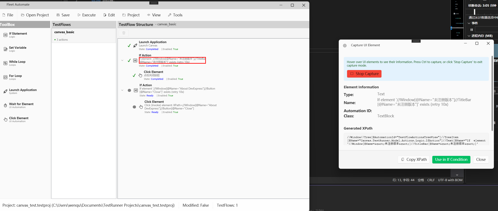

TestFlow を視覚的に構成
自動化、システム、ロジック、フロー制御 Action を順序付き TestFlow に配置できます。
Windows アプリ向け WYSIWYG 自動化
Fleet Automate は、ビジュアルな Action Box、構造化された Flow エディター、UI 要素キャプチャ、ライブ実行状態、確認しやすいログにより、再現可能なデスクトップ自動化 TestFlow の作成を支援します。

Fleet Automate を選ぶ理由
再利用可能な Action からフローを設計し、専用ダイアログで各ステップを設定し、実行状態の変化を UI で直接確認できます。
自動化、システム、ロジック、フロー制御 Action を順序付き TestFlow に配置できます。
実行中のアプリからウィンドウ、ボタン、入力欄、その他のコントロールを識別できます。
Action 状態、出力ログ、一時停止/再開、Flow の結果を同じワークスペースで追跡できます。
プロジェクトと TestFlow はファイルベースで、確認、バージョン管理、コピー、共有が容易です。
アイデアから実行へ
各 Action は、識別子タイプ、検索範囲、リトライ動作、Invoke モード、辞書オプションなど重要なプロパティを公開します。目的は、素早い設定と隠れた前提の削減です。

AI 対応 CLI 自動化
Fleet Automate は AI Agent 時代に向けた CLI 機能を備えています。Agent は TestFlow の作成や変更、自動化の実行、結果確認、UI で人が観察できる状態での修正反復を行えます。
Agent は CLI からプロジェクト作成、Flow 追加、Action 挿入、Action プロパティ更新を行えます。
CLI で Flow を準備し、UI ホスト型コマンドセッションによりデスクトップ UI を観察可能に保てます。
構造化出力には実行モード、payload、エラーが含まれ、Agent が失敗を推論しやすくなります。
Agent は selector の改善、Action 設定の更新、プロジェクト保存、再実行を繰り返せます。
一致するプロジェクトを開いた Fleet Automate UI セッションがある場合、CLI はそのセッションへコマンドをルーティングします。見つからない場合はオフラインファイルモードにフォールバックします。
mode は ui-session または offline。fleetctl testproj show --project D:\demo\sample.testproj
fleetctl testproj create --project D:\demo\sample.testproj --name SampleProject
fleetctl testflow create --project D:\demo\sample.testproj --name calculator_flow
fleetctl testflow tree --project D:\demo\sample.testproj --flow calculator_flow
fleetctl action add --project D:\demo\sample.testproj --flow calculator_flow --type LaunchApplicationAction
fleetctl action set --project D:\demo\sample.testproj --flow calculator_flow --path 0 --property ExecutablePath --value calc.exe
fleetctl action show --project D:\demo\sample.testproj --flow calculator_flow --path 0 --format json
fleetctl project save --project D:\demo\sample.testprojコンパニオン CLI ツール
winauto-cli は pywinauto をラップした Python CLI ツールで、Windows デスクトップ自動化向けに検査、操作、検証、スクリーンショット、selector 改善のコマンド面を提供します。
PyPI では list-windows、find、inspect、act、assert、screenshot などのコマンドが紹介されています。Python 3.10+ が必要です。
pip install winauto-cliPyPI ページを開くワークフロー
要素識別子をキャプチャまたは入力し、再利用可能な対象をプロジェクト辞書で管理します。
クリック、待機、条件、ループ、ログ、変数、システム Action を読みやすいフローに組み合わせます。
完了状態、出力ログ、リトライ、一時停止/再開をコンテキストを失わずに確認できます。

Calculator demo
電卓サンプルは、アプリの特定、ボタン呼び出し、期待 UI の待機、実行進捗の記録までを含む完全な UI 自動化フローを示します。
スクリーンショット

Getting started
Fleet Automate 0.1.0 Windows x64 をインストール:
website/releases/FleetAutomate-0.1.0-setup.exeデスクトップアプリをビルド:
dotnet build src/FleetAutomate.Application/FleetAutomate.csproj次にサンプルプロジェクトを開く:
src/SampleProjects/WindowsCalculatorCli/windows-calculator.testproj自動化を始めますか？
リポジトリを clone し、サンプルプロジェクトを開いて、動作する TestFlow をエンドツーエンドで確認してください。